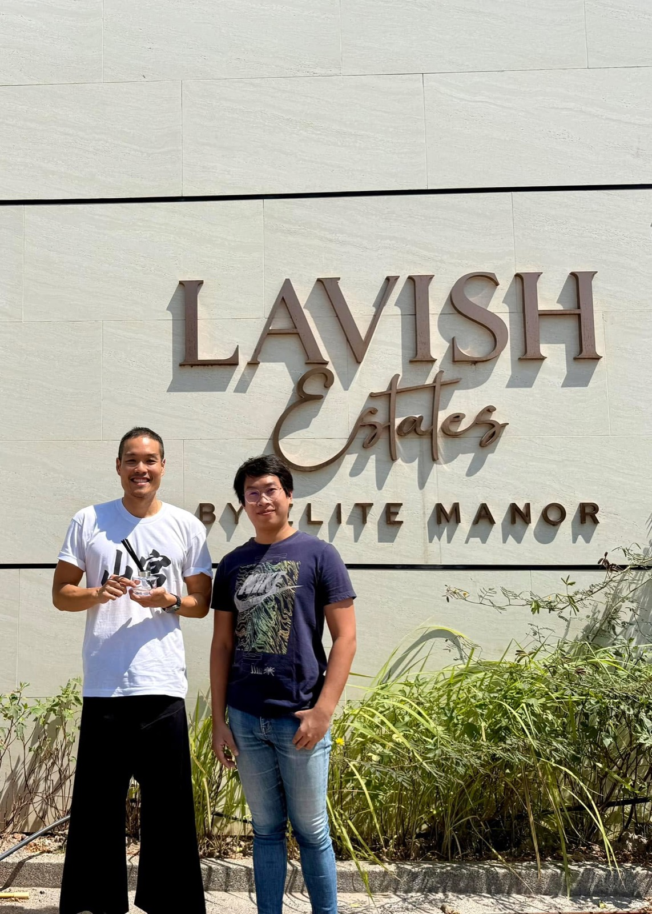

2568 · สังคม · บันทึกย่อย
รับออเดอร์น้ำหอม diffuser 1,000 ขวดครั้งแรก

น้ำหอมลงแดง 98 diffuser 1,000 ขวด 💪🔥
จากทำน้ำหอมปลุกเสก ขวดน้อยๆ ทำทีละร้อยสองร้อยขวด อยู่ๆ งานช้างก็เข้า 🔥 โชคดีที่น้องให้โอกาสพิสูจน์ฝีมือ โชคดีที่สุดคือได้รู้จักน้องพีทคนเก่ง 💪🎉 น้องบอกสั้นๆ ว่า เอากลิ่น 98 ขวดแบบ #jomalone งานดีไซน์ผมไว้ใจพี่ ❤️
เรื่องมีอยู่ว่า ราว 2 เดือนก่อน มีงานเลี้ยงขอบคุณลูกค้าพาไปขึ้นเรือล่องทะเล ปกติทุกๆวัน ตั่วโก๊ฉีดแต่เลข 95 เมตตามหานิยม หวังลูกค้าใจดี ผู้ใหญ่ช่วยเหลือ แต่รอบนี้มาขึ้นเรือเผื่อโชคดีได้รู้จักคนเก่งๆ ได้เจอโอกาสดีๆ จัดเลย 98 พรมรัวๆ แต่หัวเช้า 😆✨
พอขึ้นเรือไม่ทันไร เมาคลื่นเละะะ 🤮 ระหว่างนั่งมึนงง ก็มีน้องทักมาถามว่า รู้จักอาจารย์ซินแสที่ลงเสาเอกเก่งๆ มั้ย เลยตอบว่าเพื่อนที่ทำโครงการน่าจะมี!!! แต่ทั้งโทรทั้ง message ก็ติดต่อใครไม่ได้เลย ระหว่างนั้นเลยนึกได้ว่าตอนก่อนออกเรือ มีให้ทุกคนแนะนำตัวว่าชื่ออะไร ทำธุรกิจอะไรอยู่ จำได้ว่ามีน้องที่ทำหมู่บ้านขาย เลยได้เข้าไปแนะนำตัว เผื่อน้องจะน้องมีซินแส ก็เลยได้รู้จักกัน 🥰
เลยเล่าเรื่องบ้านอาจ้อ และโปรเจคที่กำลังทำเรื่องช่วยเหลือชุมชน รวมถึง workshop น้ำหอม โดยมีน้ำหอม 3 ตัวนี้ เปิดตัวแบบตั้งใจมูเตลูขั้นสุด ฉีดแล้วรัก 95 ฉีดแล้วรวย 98 ฉีดแล้วหลง 69 โชคดีที่พกน้ำหอมไปขึ้นเรือด้วย พอน้องได้ลองกลิ่น ก็ตอบตกลง 😇✨
บางทีโชคดีก็มาจากการความพยายามอยากช่วยเหลือคนอื่น สุดท้ายปาฏิหาริย์เกิดจริงแบบไม่น่าเชื่อ 😇 งานนี้โรงงานนรกเริ่มแล้ว ทีมตั้งใจทำสุดความสามารถนะ 💪🔥
เพื่อนๆ คนไหนอยากมีเครื่องหอมไปใช้ในกิจการตัวเอง ฝากเนื้อฝากตัวด้วยนะครับ 🥰✨
ปล บ้านน้องไฮเทคมากมาย เพื่อนๆคนไหนสนใจ สอบถามได้เช่นกันนะ ❤️
#LavishEstates ✨
#LongdaengPhuket 🧧
#TohdaengPhuket 🧧
#บ้านอาจ้อ ❤️